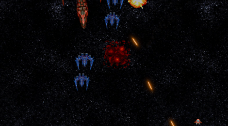
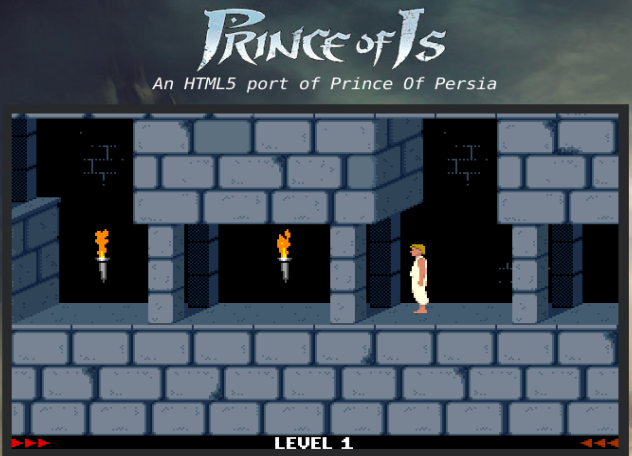
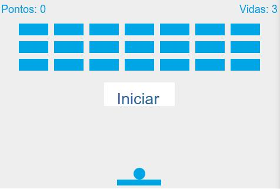
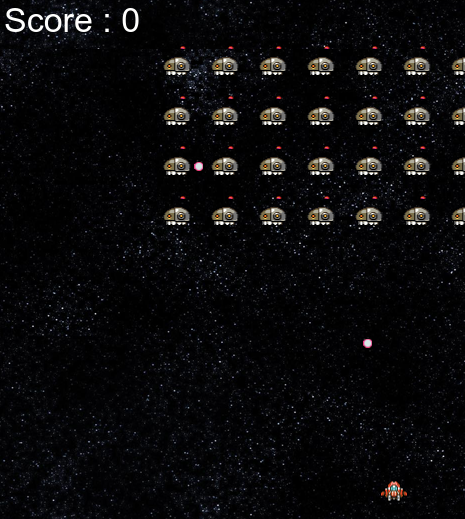
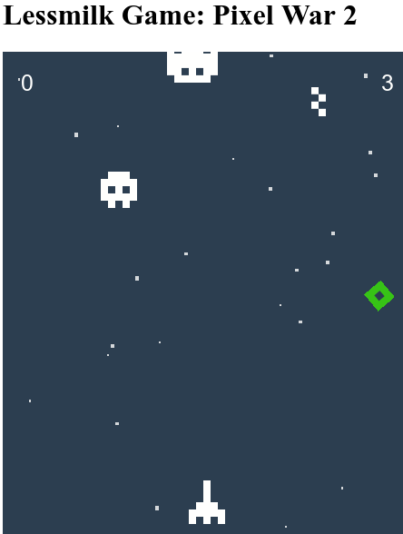
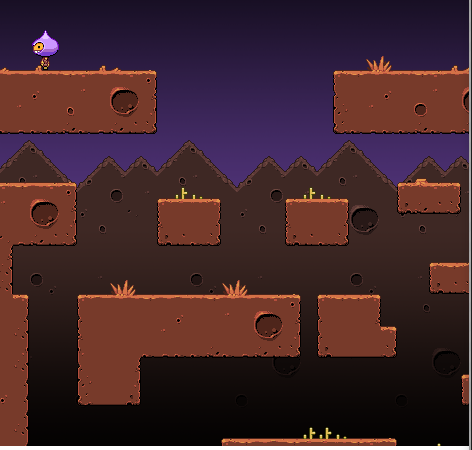
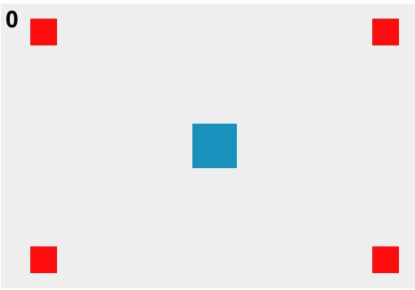

Exemplos testados do Phaser
Estes exemplos foram encontrados na internet. Apenas para o breakout, traduzi alguns termos e frases.
Bom exemplo de Piano criado com o Phaser
Toque com mouse ou teclado
https://github.com/wasi0013/Phaser-Piano
Bom Jogo de Nave Espacial/spaceship

Tutorial bem comentado, passo-a-passo e com código fonte em 5 partes:
http://codeperfectionist.com/articles/phaser-js-tutorial-building-a-polished-space-shooter-game-part-1/
Dica: apenas edite o game.js e remova a URL dos assets no preload(), deixando somente assim: game.load.image('starfield', 'assets/starfield.png');
Prince of Persia com Phaser

https://github.com/ultrabolido/PrinceJS
Breakout

Fontes - BreakoutPhaser.zip
Binários para Android - Breakout-release.apk
Original com tutorial passo-a-passo - https://github.com/end3r/Gamedev-Phaser-Content-Kit
Eu traduzi o tutorial acima de forma livre e compartilho o PDF aqui. Mas recomendo apenas para quem tiver grande dificuldade com inglês, pois como é um texto grande pode conter error. Sempre confira com o original, especialmente o código.
Invader

PixelWar

Executáveis do Android - PixelWar-release.apk (criado com o PhoneGap)

Phaser Squares
Pequeno e didático exemplo de game com Phaser

Tutorial - https://loonride.com/learn/phaser/getting-started
Fontes - https://github.com/Loonride/phaser-squares